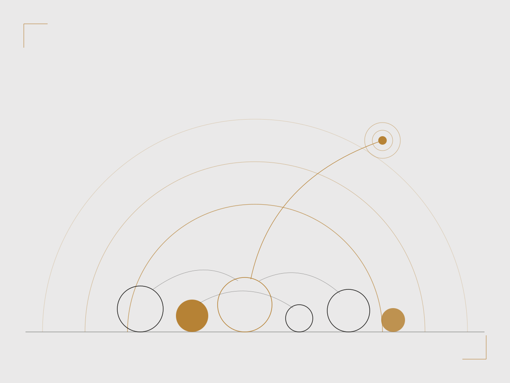

Cum stau, de fapt? — 10 întrebări
Un test scurt, confidențial și fără diagnostic. La final îți arătăm trei direcții: să înțelegi mai bine, să vorbești cu un specialist, sau să intri într-un grup care face lucruri.
Începe testulAceleași subiecte, patru voci diferite. Materialele pentru tineri sunt scrise ca o conversație; cele pentru organizații și autorități, ca instrumente de lucru pe standarde.
Poți citi pe sărituri, poți începe cu un test scurt, poți doar să te uiți. Nimic de aici nu îți pune o etichetă și nimic nu ajunge la școala ta.

Un test scurt, confidențial și fără diagnostic. La final îți arătăm trei direcții: să înțelegi mai bine, să vorbești cu un specialist, sau să intri într-un grup care face lucruri.
Începe testulCe se întâmplă în corp, de ce nu e „doar în capul tău” și ce ajută înainte de examen, în pauză, la 2 noaptea.
Citește ghidulCe să spui, ce să nu spui, și când trebuie să implici un adult — chiar dacă ți s-a cerut să nu spui nimănui.
Citește ghidulGrupuri, cluburi și proiecte din rețea. Nu terapie — apartenență, ceea ce ajută mai mult decât credem.
Caută pe hartăDouă nevoi, tratate separat: ce faci pentru elevii tăi și ce faci pentru tine. A doua nu e un bonus.
Organizații din rețea care livrează programe la nivel de clasă sau de școală, cu nivelul lor de conformitate afișat.
Caută în județul meuDacă ai ajuns aici pentru că ceva nu e în regulă: ai făcut deja partea grea. Mai departe mergem pe trei pași — ce observi, ce ar putea însemna, unde mergeți.
O listă de schimbări care merită atenție — somn, școală, prieteni, apetit, corp — și care nu sunt „doar adolescența”.
Vezi listaCâteva întrebări care ne ajută să înțelegem cât de urgent e și către ce tip de sprijin are sens să mergeți. Nu e un diagnostic.
Începe orientareaServicii și specialiști din județul vostru, cu ce oferă fiecare și cum îi contactați.
Caută pe hartăAutovătămare, gânduri de suicid, comportament periculos: nu așteptați o programare. Sună la 112 sau folosește butonul de ajutor imediat din colțul paginii.
Aici standardele nu mai lucrează în fundal — sunt materialul de lucru. Documentația e organizată pe cele trei părți ale ghidului de excelență, plus instrumentele practice.
| Resursă | Ce conține | Pentru |
|---|---|---|
| Standardele de Excelență — Partea I | Dimensiunea conceptuală: criteriile de calitate și de ce arată așa | ONG, școală, autoritate |
| Standardele de Excelență — Partea II | Bune practici de referință și mecanismul de scoring pe criterii | ONG, școală |
| Standardele de Excelență — Partea III | Servicii accesibile tinerilor din afara structurilor formale | Autoritate locală, DSP |
| De unde încep — parcurs pas cu pas | Cum construiești o intervenție de la zero, pe standarde | ONG, școală |
| Autoevaluare formativă | Profil pe criterii, self-declared; poarta de intrare în rețea | ONG, școală |
| Kit pentru autorități locale | Cum contractezi și monitorizezi intervenții pe standarde | Autoritate locală, DSP |
Toate instrumentele de autoevaluare de pe platformă sunt non-diagnostice și confidențiale. Pentru minori, maparea rezultat → recomandare se face împreună cu specialiști, iar la orice semnal de risc înalt platforma direcționează imediat către suport uman și prima linie.
Inspiră cât timp cercul crește. Expiră cât timp se micșorează. Nu trebuie să faci nimic altceva în acest moment.
116 111
Gratuit, confidențial, non-stop. Poți suna și dacă nu știi ce să spui.
Sună acumPlatforma nu oferă diagnostic și nu înlocuiește un specialist. Dacă preferi să scrii în loc să vorbești, vom avea în curând și un canal de mesaje.